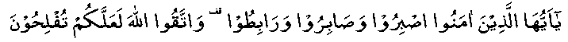

Hadhrat Khansa (RA) was a famous poetess. She accepted Islam in Madinah Munawwarah, along with some other members of her family.
Ibn Athir writes: "The learned have agreed that the best woman poet in Arabic was Hadhrat Khansa (RA). No woman in history has ever written such arabic poetry as Hadhrat Khansa (RA)."
During the time of Hadhrat Umar (RA) in 16 A.H., the famous battle of Qadisiyyah was fought between the Muslims and the Persians. Hadhrat Khansa (RA), along with her four sons, took part in this battle.
On the eve of the battle, she encouraged all her four sons, saying: "O, my sons! You embraced Islam and emigrated of your own free will. By Allah! Beside whom there is no God; you all are the sons of the same father, just as you are the sons of the same mother. I never deceived your father, nor disgraced your maternal uncle. I never allowed a mark to come on your high birth nor spoiled your family background. You know what rewards Allah Ta’ala has promised for those who fight against the disbelievers in His path. You must remember that the everlasting life of the Hereafter is far better than the temporary life of this world. Allah Ta’ala has said in the Qur-aan-e-Kareem:

‘O you, who have Imaan! Exercise sabr, compete in patience, continue doing good deeds and fear Allah (so that you may be successful. (S3: V200)’
When you get up tomorrow morning, be prepared to give off your best in the battle. Go ahead into the enemy lines, seeking help from Allah Ta’ala. When you see the fighting becoming severe, go right into the centre and face the enemy chiefs. Inshallah! You will get your home in Jannat with honour and success."
The next day, when the battle was in full swing, all four sons advanced towards the enemy lines. One by one, they attacked the enemy, reciting the words of their mother in verses and fought till all of them were martyred.
When the mother got the news, she said: "Alhamdulillah! Glory to Allah Ta’ala who has honoured me with their martyrdom. I hope that Allah Ta’ala will unite me with them under the shade of His Mercy."
Here is a mother of that time. She encouraged her sons to jump into the thick of battle and when all the sons are killed one after the other, she glorifies Allah (and thanks Him).